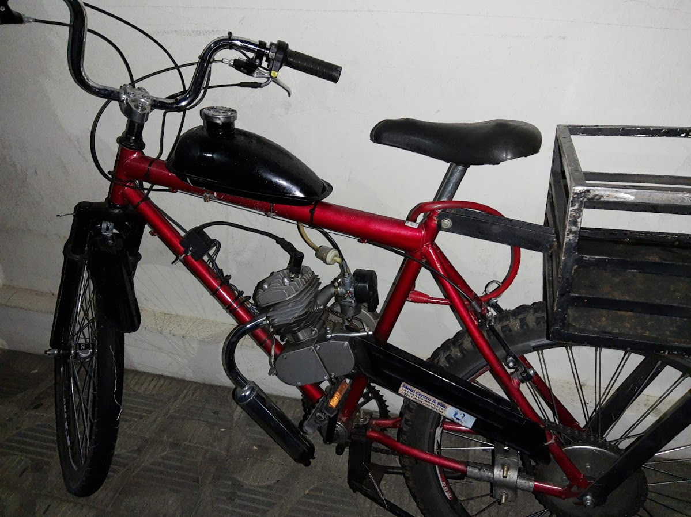
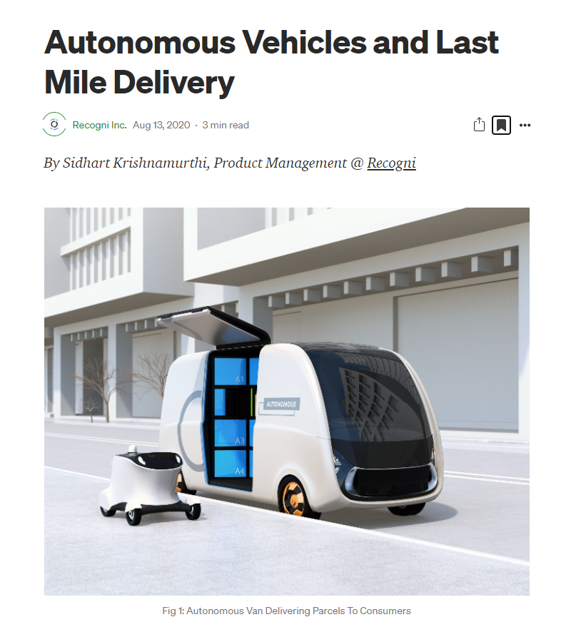

class03
class: center, middle
Retrospecto
Definições de Logística
Penso que o logística é muito mais um conjunto de princípios do que uma operação. “Fazer” logística relaciona-se à promover o acesso a bens de consumo e serviços, essenciais à vida humana e promovidos pelo consumo, destinados ao consumidor final da maneira mais eficiente e responsiva possível.
.question[ “Logística é dispor a mercadoria ou o serviço certo, no lugar certo, no tempo certo e nas condições desejadas, ao mesmo tempo em que fornece a maior contribuição à empresa”. (Ballou, 2001)]
Gestão Cadeia de Suprimentos
.question[ .large[ Cadeia de suprimentos é a estrutura consolidada e integrada, em níveis estratégico, tático e operacional, entre agentes de produção, mercadológicos, logísticos e sociedade, para que seja possível coordenar as operações de maneira a garantir a gestão orientada à logística, tendo como objetivo o trade-off entre responsividade e eficiência, além de garantia de um contexto sustentável de desenvolvimento por ações socialmente responsáveis e resilientes. ]]
class: inverse, middle
Desafios contemporâneos da gestão da cadeia de suprimentos
Alguns desafios da/para Logística 4.0:
.panelset[
.panel[.panel-name[Será???]
- redução nos volumes de estoque de matéria-prima ao longo da cadeia de suprimentos e o desenvolvimento de fornecedores aptos ao atendimento de pedidos seguindo as necessidades reais do negócio;
- pela diminuição dos custos com perda de ativos e com transportes;
- pela transformação da organização dos processos de gestão de estoques e armazenagem; ]
.panel[.panel-name[Não pode ser!!!]
- por integrar e compartilhar dados mediante plataformas abertas;
- por desburocratizar processos e obter diferenciais competitivos;
- por aumentar os níveis de segurança do sistema;
- pela identificação de problemas, permitindo a adoção rápida e prática de soluções pertinentes;
- por proporcionar o fluxo de informações, serviços e produtos.
]
.panel[.panel-name[Vamos conseguir?]
- digitalização
- virtualização dos processos
- conectividade e visibilidade (visão)
- transparência de processos e atuação (entendimento)
- capacidade preditiva (estar preparado) e
- adaptabilidade ao sistema (otimização). ] ]
.center[ RESILIÊNCIA? RESPONSABILIDADE? BEM ESTAR?]
Alinhamento estratégico
- Entender a
incertezado cliente e da cadeia de suprimentos.
- oferta e demanda
- previsíveis
- incertas
Entender as
capacidadesda cadeia de suprimentos e desenhar o alinhamento estratégico com foco no equilíbrio entreresponsividadeeeficiência.Combinar a responsividade da cadeia de suprimentos e a incerteza implícita de demanda e oferta.
Escopo do alinhamento estratégico
- Escopo de operação interna: redução do custo local
- Escopo intrafuncional: redução do custo funcional
- Escopo interfuncional: maximização do lucro da empresa
- Escopo entre empresas: maximização do excedente da cadeia de suprimentos
| ## Desafios para alinhamento estratégico |
| - Aumento da variedade de produtos e redução dos ciclos de vida - Globalização e aumento da incerteza - Clientes mais exigentes - Maior visibilidade da cadeia de suprimentos - Fragmentação da propriedade da cadeia de suprimentos - Tecnologia em constante transformação e ambiente de negócios - Meio ambiente e sustentabilidade |
Fatores-chave da gestão da cadeia de suprimentos
.tip[ Instalações são os locais físicos reais na rede da cadeia de suprimentos onde o produto é armazenado, montado ou fabricado. Decisões com relação à função, localização, capacidade e flexibilidade das instalações têm impacto significativo sobre o desempenho da cadeia de suprimentos.]
Fatores-chave da gestão da cadeia de suprimentos
.tip[ Estoque abrange todas as matérias-primas, o trabalho em processo e os produtos acabados dentro de uma cadeia de suprimentos. Mudar políticas de estoque pode alterar de modo significativo a eficiência e a responsividade da cadeia de suprimentos.
]
Fatores-chave da gestão da cadeia de suprimentos
.tip[ Transporte envolve a movimentação de estoque de um ponto para outro na cadeia de suprimentos. Opções de transporte têm grande impacto sobre a responsividade e a eficiência da cadeia de suprimentos.
]
Fatores-chave da gestão da cadeia de suprimentos
.tip[ Informação consiste em dados e análise referentes a instalações, estoque, transporte, custos, preços e clientes por toda a cadeia de suprimentos. A informação é potencialmente o maior fator-chave de desempenho na cadeia, pois afeta diretamente cada um dos demais fatores.]
Fatores-chave da gestão da cadeia de suprimentos
.tip[ Sourcing é a escolha de quem realizará determinada atividade da cadeia de suprimentos, como produção, armazenamento, transporte ou a gestão da informação. Decisões de contratação afetam tanto a responsividade quanto a eficiência de uma cadeia de suprimentos.
]
Fatores-chave da gestão da cadeia de suprimentos
.tip[ Precificação (pricing) determina o quanto uma empresa cobrará por bens e serviços que ela torna disponíveis na cadeia de suprimentos. Preços afetam o comportamento do comprador do bem ou serviço, afetando, assim, o desempenho e a demanda da cadeia de suprimentos.
]
class: middle, inverse
Desempenho logístico
KPIs
KPIs (Key Performance Indicators) - um indicador de desempenho deve demonstrar claramente que ação deve ser tomada e quando deve ser tomada.
- Os indicadores não podem ser individuais.
- Atenção para medidas conflitantes, que podem acentuar os problemas das áreas ao invés de resolvê-los.
Quatro elementos fundamentais para medidas de desempenho
- Parceria com fornecedores, clientes e pessoal interno
- Transferência de poder para as pessoas das pontas
- Integração das medidas, relatórios e melhoria de desempenho
- Conexão das medidas de desempenho à estratégia corporativa
O que medir?
Responsividade x eficiência
- Eficiência - uso adequado de recursos
- Responsividade mensurada por indicadores do processo
- Responsividade conforme percepção dos clientes
Instalações
Métricas relacionadas à instalação
.midi[ - Capacidade
- Utilização
- Tempo ocioso de processamento/preparação/parada
- Custo de produção por unidade
- Perda de qualidade
- Tempo de fluxo/ciclo teórico de produção
- Tempo de fluxo/ciclo médio real
- Eficiência de tempo de fluxo
- Variedade de produtos
- Contribuição de volume dos 20% maiores SKUs e clientes
- Tamanho médio de lote de produção
- Nível de serviço de produção
]
Estoque
Métricas relacionadas a estoque
.midi[ - Tempo cíclico C2C - Estoque médio - Giro de estoque - Produtos com mais de um número específico de dias de estoque - Tamanho médio de lote de reposição - Estoque de segurança médio - Estoque sazonal - Taxa de atendimento - Fração de tempo sem estoque - Estoque obsoleto]
Transporte
Métricas relacionadas a transporte
.midi[ - Custo médio de transporte de recebimento
- Tamanho médio de recebimento
- Custo médio de transporte de recebimento por embarque
- Custo médio de transporte do embarque
- Tamanho médio de embarque
- Custo médio de transporte de envio por embarque
- Fração transportada por modo
]
Informação
Métricas relacionadas à informação
.midi[ - Horizonte de previsão
- Frequência de atualização
- Erro de previsão
- Fatores sazonais
- Razão entre variabilidade da demanda e variabilidade do pedido
]
Sourcing
Métricas relacionadas a Sourcing
.midi[ - Dias pendentes de contas a pagar
- Preço médio de compra
- Faixa de preço de compra
- Quantidade média de compra
- Qualidade do fornecimento
- Tempo de execução de fornecimento
- Percentagem de entregas de imediato
- Confiabilidade do fornecedor
]
Precificação
Métricas relacionadas à precificação
.midi[ - Margem de lucro
- Dias de vendas pendentes
- Custo fixo incremental por pedido
- Custo variável incremental por unidade
- Preço médio de venda
- Tamanho médio de pedido
- Faixa de preço de venda
- Faixa de vendas periódicas
]
class: center, middle
Serviço ao cliente
Serviço ao cliente
Todas as atividades necessárias para receber, aceitar, processar, enviar e faturar os pedidos dos clientes, controlar para que as atividades possam ser executadas em conformidade com o planejamento e assegurar-se que o cliente está satisfeito. O objetivo do serviço ao cliente é CRIAR VALOR para o cliente.
Os diferenciais competitivos nas operações logísticas são:
- Vantagem em CUSTO
- Vantagem em VALOR
Redução de custo
- Realizando uma boa gestão de estoques
- Otimizando processos
- Melhorando a produtividade
- Introduzindo novas tecnologias
- Otimizando recursos
- Através da negociação com fornecedores
- Utilizando modos alternativos
- Otimizando utilização de espaços / transporte
Agregação de valor
- Disponibilizando o produto no momento desejado
- Fazendo entregas rápidas
- Sendo consistente nas entregas ao cliente
- Aumentando a frequência de entrega
- Tornando fácil o processo de compras
- Disponibilizando informações confiáveis em tempo real
- Oferecendo flexibilidade; local entrega, horário, embalagem, serviços especiais
- Corrigindo rapidamente qualquer erro, ou reagindo a eventos não esperados
#Não há nenhum valor no produto ou serviço até estar nas mãos do cliente ou consumidor.
“O CEO da Cargo X, Federico Vega, conta que todo o processo é conduzido de forma online, desde a contratação ao monitoramento dos fretes. “O uso de machine learning aliado ao nosso Big Data, que possui informações de rotas e mais de 200 mil caminhoneiros cadastrados, possibilita que tenhamos ganhos significativos de eficiência e confiabilidade para gerar o match entre oferta e demanda”, afirma. (…)
Segundo Federico, atualmente, a Cargo X opera mais de 6 mil fretes por mês com um time de menos 150 pessoas dedicados a operação. “Não possuímos um único caminhão próprio, fato impossível de se realizar sem o uso de tecnologia”, destaca o executivo.
No último trimestre, a taxa de sinistro da empresa foi menor que 2%, o que Federico atribui ao rigoroso processo de gestão de risco e monitoramento 100% online.”




Enquanto isso….
class: center, middle
.larger[ DÚVIDAS?]